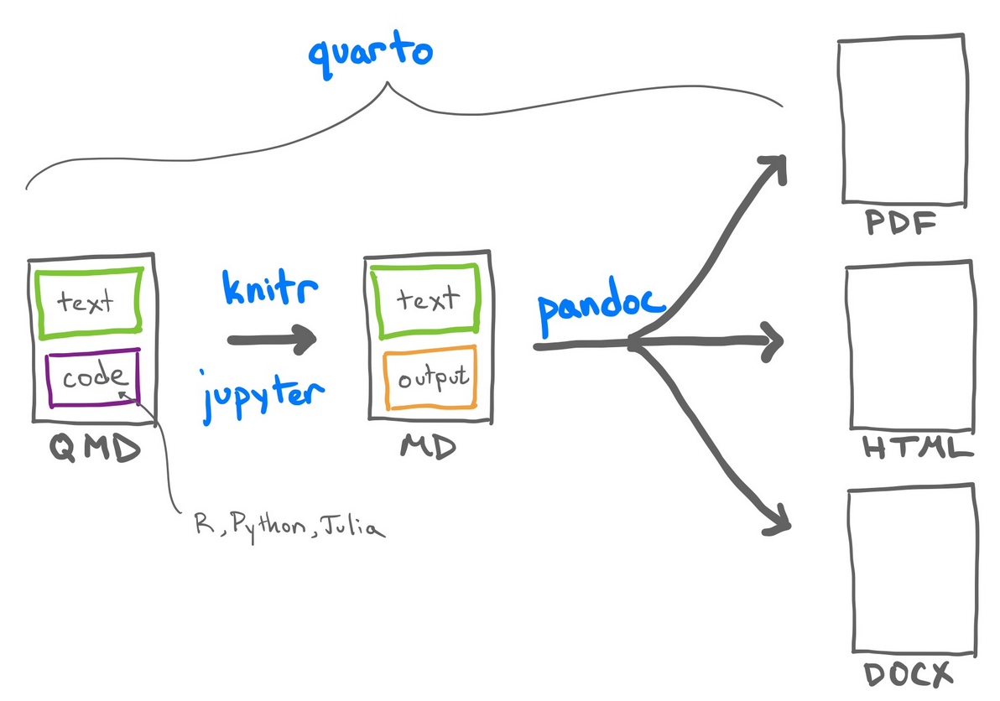
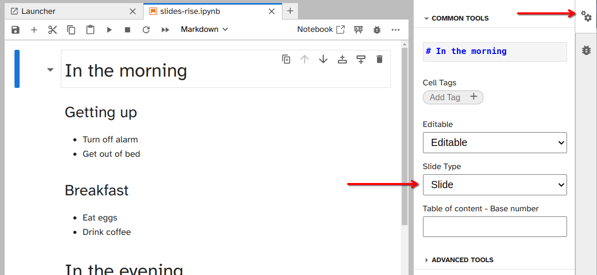
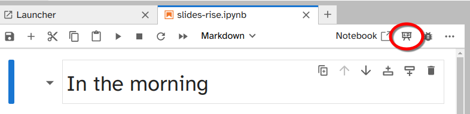

Quarto, RMarkdown, and Jupyter Slides
Learning outcomes
- Understand how Quarto extend R Markdown documents functionalities.
- Explore different data science products to communicate your results: slides, blogs and books.
- Create slides using Jupyter Notebook and Quarto slides with
reveal.js - Create a Jupyter Book and a Quarto books.
- Create a Quarto Blog.
- Sharing rendered HTML files publicly via GitHub Pages.
Platform in focus Jupyter Lab, RStudio IDE, Quarto
Lecture 6 Activity 1
Check the following data science analysis. And look for the analysis files
Quarto Documents
Quarto is a newer scientific and technical publishing system that aims to combine the best features of a Jupyter Notebook and an R Markdown document. It uses markdown, code chunks (similar to R Markdown), and pandoc to create various output formats. If you need another Markdown resource, the Quarto documentation has its own markdown basics guide.
 Quarto documents are created with text and Python, R and/or Julia code
Jupyter Notebooks for Python and RMarkdown for R?
Historically, Jupyter Notebooks were designed for Python and R Markdown documents were designed for R. These days, there are many different Jupyter Kernels you can install, and R Markdown documents can also support many different language engines. Quarto natively supports Python, R, Julia, and Javascript, but can also leverage all of the Jupyter kernels to run more languages.
If you want a single document to run multiple languages (R and Python), Python can run R via the rpy2 Python package, and R can run Python via the reticulate R package. Quarto will leverage knitr and reticulate to run documents that need to run both R and Python.
Github README.md
If you need to document code and output in your README.md file, you can create a Quarto README.qmd document that can be rendered into a github-flavored markdown README.md file.
In Quarto, you will need to set the output format in the YAML to:
output: gfmThis process is similar to R Markdown documents rendering from README.Rmd file. The main difference here is that in R Markdown you will be using a different output format string:
output: github_documentLecture 6 Activity 2
Why using R Markdown and Quarto documents can make your work more reproducible?
.Rmdand.qmdare plain-text files, they can be opened and edited with almost any editor.- Including text in the final reports created involves a more detailed explanation of your work than only commenting the code.
- They use pandoc to render the files in different formats.
- Because they create a versatile
.mdfile as intermediate step. - They allow running code as inline code or in code chuncks.
- The code chunks could be run in any order.
Presentations with JupyterLab, RMarkdown and Quarto
You can create a great set of slides to share your results with others!
We are going to use the framework reveal.js. RMarkdown most popular slides are created with a package called xaringan. Since Quarto appear, it is possible to create slides using reveal.js that is the same framework that is available by default in Jupyter Notebooks. Anyway, it would be possible to generate reveal.js presentations with RMarkdown if you install the revealjs package and follow these instructions.
Quarto
Clicking here you can have an example of what you can do with Quarto presentations using reveal.js framework.
In the YAML header, you will need to change the format option to revealjs.
format: revealjs---
title: "Habits"
author: "John Doe"
format: revealjs
---
# In the morning
## Getting up
- Turn off alarm
- Get out of bed
## Breakfast
- Eat eggs
- Drink coffee
# In the evening
## Dinner
- Eat spaghetti
- Drink wine
## Going to sleep
- Get in bed
- Count sheepIf you want to create your revealjs html slides and be able to share a single html file with others as a slide, you may need to embed and make the slide “self contained”.
format:
revealjs:
embed-resources: trueThis puts all the external resources for the HTML document inside the HTML file. Otherwise your slides would need to travel in a zip file with all the external resources in the same directory. You will typically need this when sharing slides that have images and computation in them. You may notice additional folders created in the directory as a cue that you may need to think about embedding your resources to make the slides self-contained, depending on how you will use and share them.
R Markdown
R Markdown has been around for a long time, and has many output formats. The defaults that come with R Markdown are less popular than formats you need to install.
We’ll show you how you can create a reaveal.js and xaringan presentation, but you may need to install a few packages first.
install.packages(c('xaringan', 'revealjs'))Reveal.js
output: revealjs::revealjs_presentation---
title: "Habits"
author: John Doe
output: revealjs::revealjs_presentation
---
# In the morning
## Getting up
- Turn off alarm
- Get out of bed
## Breakfast
- Eat eggs
- Drink coffee
# In the evening
## Dinner
- Eat spaghetti
- Drink wine
## Going to sleep
- Get in bed
- Count sheepXaringan
Many people who are still working with R Markdown documents, will create their slides using {xaringan}. This lessons uses reveal.js for R Markdown slides to keep the output type consistent.
If you want to learn more about Xaringan slides, see the Xaringan Slides Chapter
Jupyter Notebooks
Jupyter notebooks also support slides with RISE.
https://github.com/jupyterlab-contrib/rise
You can use Jupyter Lab interface too with the same purpose. You can read more about it here
The main page for RISE is here: https://github.com/jupyterlab-contrib/rise Where you can find the command to install it:
pip install jupyterlab_riseTo mark which code cells should be part of the presentation, we can go to the property inspector (the settings wheel in the left side panel) and then select the slide type from the dropdown menu.

Once you are done marking up slides, you can export them to reveal.js presentations are two dimensional, with slides in the horizontal direction and sub-slides in the vertical direction.
Slide: Standard slide navigated to via left and right arrows.Sub-slide: Sub-topic of a slide, navigated to via up and down arrows.Fragment: Animated in as part of the previous slide, could e.g. be a bullet point in a list.-(or empty): Will appear in the same cell as the previous slide.Notes: Speaker notes are visible when you presstSkip: Not included
You will notice that images that are referenced via  or <img> do not show up in the exported slides (or the exported HTML). Until this issue is fixed, a workaround is to paste the image into a Markdown cell and it will be included as an attachment, which shows up fine in HTML and slide exports.
To run your RISE slides in jupyter lab, there is a small button on the top.

Book output
Jupyter, R Markdown, and Quarto also have “book” outputs. This is a special website format that can also be converted into PDFs and ePUB files for physical book publishing.
- Jupyter Book: https://jupyterbook.org/en/stable/intro.html
- Bookdown (R Markdown): https://bookdown.org/
- Quarto Book: https://quarto.org/docs/books/
The course materials does not use the official Quarto book layout, it actually uses a regular Quarto website layout. This is because books will have certain limitations because it needs to be able to render into a format for physical publishing. Quarto is a flexiable tool that has many kinds of output formats. You can learn more about each in the official Quarto Guides: https://quarto.org/docs/guide/
Putting it all together
Here’s an example of a workshop given by the MDS teaching team at the Statistical Society of Canada conference:
- Repo: https://github.com/UBC-STAT/ssc-workshop-2024
- Site: https://ubc-stat.github.io/ssc-workshop-2024/
You will see in the repository that we have leveraged many of the skills taught in the class so far:
- Quarto websites
- Quarto slides
- Git + GitHub Pages for website publishing
.gitignorefiles
Exercise 1
Take 5 minutes of the class and convert one of your .Rmd, .qmd or .ipynb to a set of slides.
You can convert the slides manually or look into the jupytext or quarto convert tools to do an initial file conversion.